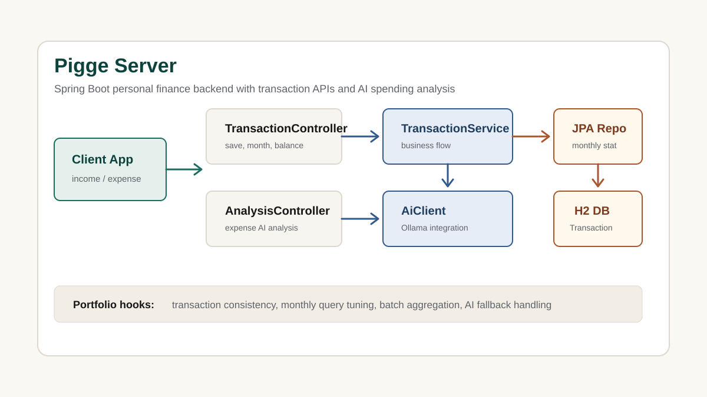
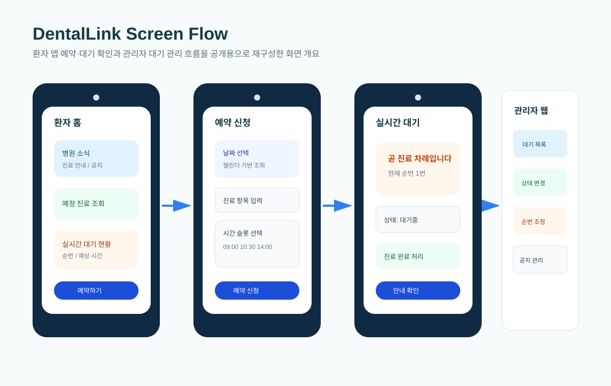
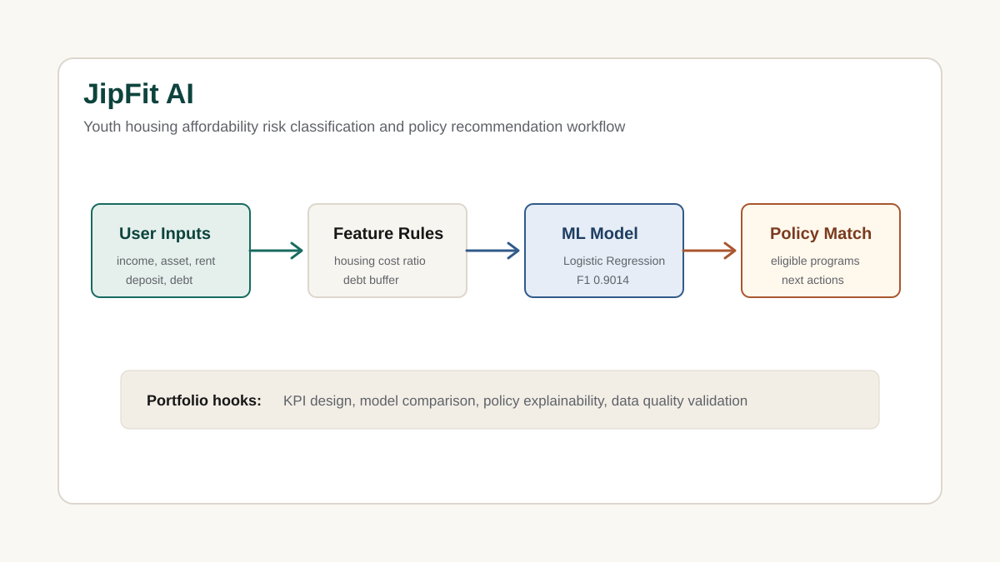
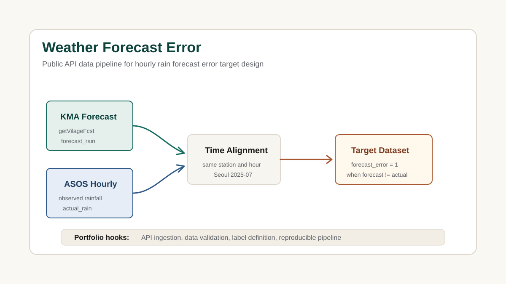
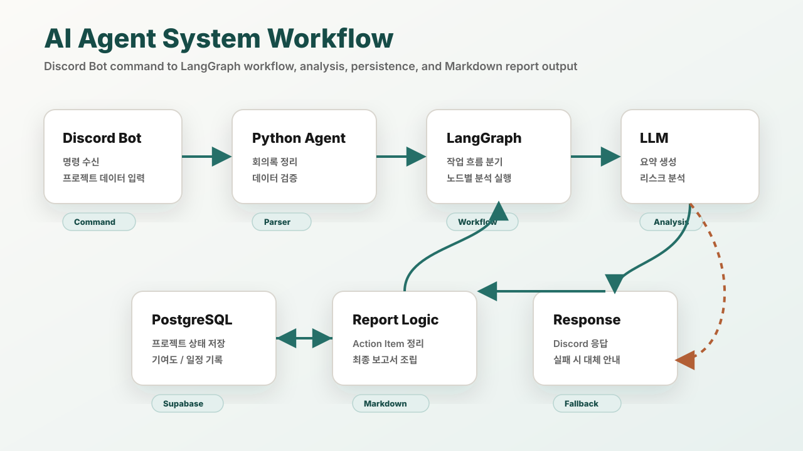
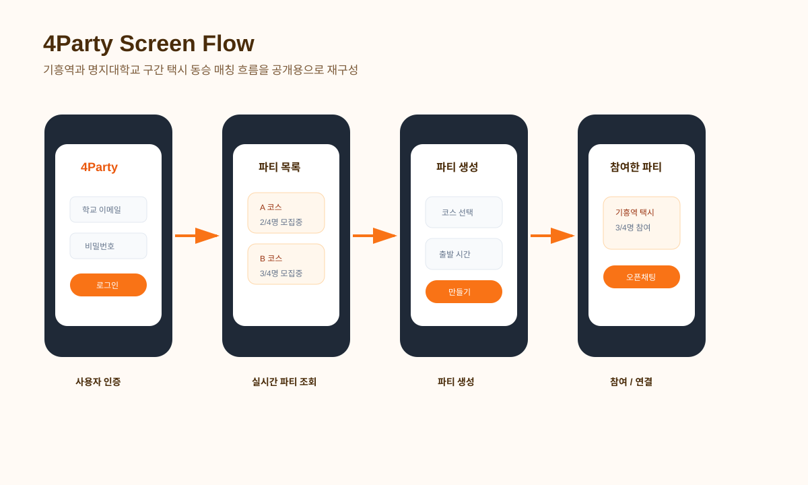
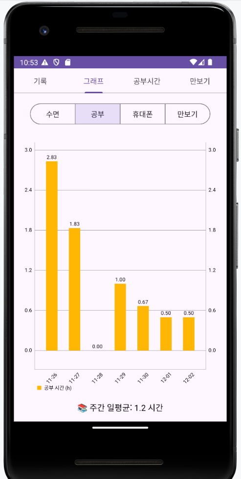

청년 주거비 부담 예측
소득, 자산, 월세, 관리비, 보증금, 부채 조건을 기반으로 주거비 부담 위험을 안정/주의/위험으로 분류했습니다.
Data Analyst & Backend Developer
Python, SQL, PostgreSQL 기반의 데이터 분석 역량과 Supabase, Firebase, Android/Flutter 구현 경험을 함께 정리했습니다. 대표 프로젝트인 JipFit AI는 청년 주거비 부담 위험을 예측하고 정책 추천까지 연결한 분석/ML 프로젝트입니다. 문제 정의, 지표 설계, 모델 성능 비교, 정책 추천 로직을 중심으로 은행·IT·핀테크 직무 적합성을 보여줄 수 있도록 구성했습니다.
신입 포트폴리오에서 중요한 것은 기술 나열보다, 데이터를 어떤 문제 해결 흐름으로 연결했는지 보여주는 것입니다.
포트폴리오의 대표 데이터 분석 프로젝트입니다. 자세한 모델링 과정과 검증 내용은 프로젝트 상세 문서로 분리했습니다.
소득, 자산, 월세, 관리비, 보증금, 부채 조건을 기반으로 주거비 부담 위험을 안정/주의/위험으로 분류했습니다.
6,000건의 합성 주거 시나리오를 생성하고 Logistic Regression, Random Forest 등을 비교해 모델을 선정했습니다.
코드는 nadanaya/jipfit-ai, 포트폴리오 설명은 JipFit 상세 README에 정리했습니다.
기존 프로젝트는 문제 상황, 데이터 흐름, 구현 역할, 개선 결과가 보이도록 정리했습니다.

가계부 앱을 위한 Spring Boot 백엔드입니다. 거래 저장, 사용자별 조회, 월별 집계, 잔액 조회, AI 소비 요약 흐름을 구현했습니다.

치과 관리자와 환자 앱을 함께 제공하는 Flutter 기반 통합 관리 프로젝트입니다. Supabase와 PostgreSQL을 활용해 환자, 예약, 대기열, 공지사항 데이터 흐름을 구현했습니다.

청년의 소득, 자산, 주거비, 부채 조건을 바탕으로 주거비 부담 위험을 분류하고, 조건에 맞는 청년 주거 정책을 추천하는 데이터 분석 및 ML 프로젝트입니다.

기상청 단기예보와 서울 ASOS 관측 데이터를 결합해 시간대별 강수 예보 오차 여부를 정의하고, 공공 API 기반 데이터셋을 구축한 분석 프로젝트입니다.

프로젝트 관리 데이터를 분석해 회의 요약, Action Item, 일정 리마인드, 기여도 분석, 리스크 탐지, 최종 Markdown 보고서를 자동 생성하는 AI Agent 프로젝트입니다.

기숙사와 목적지가 같은 학생들의 택시 동승을 지원하는 Android 기반 매칭 서비스입니다. 사용자 인증, 파티 생성/참여, 실시간 파티 조회 기능을 구현했습니다.

수면, 공부, 스마트폰 사용, 만보기 데이터를 기록하고 최근 7일 지표를 그래프로 확인하는 Android 기반 생활 기록 관리 앱입니다.
공개 가능한 코드와 프로젝트 설명 자료만 연결했습니다. 민감한 데이터, 토큰, 원본 문서는 포함하지 않습니다.
공공 API 데이터를 결합해 예보 오차 분류 타깃을 만든 데이터 파이프라인 프로젝트입니다.
github.com/nadanaya/weather-forecast-error